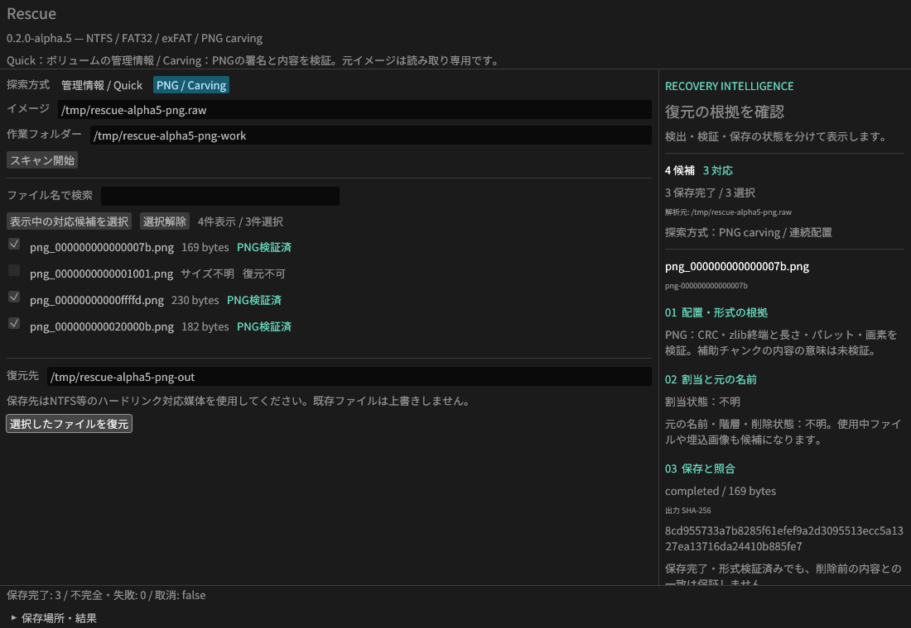

RESCUE / RECOVERY INTELLIGENCE
復元の根拠を、見える形に。
v0.2.0-alpha.5 · Rust · Windows x64検出した理由、検証できた範囲、まだ分からないこと。GUI・CLI・MCPが使う共通エンジンを、探索方式ごとに確認できます。
これは技術説明用のオフラインUIです。ファイルの読取やスキャンは実行しません。AIによる成功率予測も行いません。
PNGの構造から、連続した画像を取り出す
イメージ全体のPNG署名を探索し、チャンクCRC、zlib終端・Adler-32・展開長、パレット、画素データの展開を検証します。全8バイトの署名が読取窓の境界にあっても探索します。
操作の入口
GUI・CLI・MCPは同じRustの復元処理を呼び出します。MCPは明示した入力・出力先だけを利用します。

監査で見つかった8件への対応
8件すべての修正を実装し、監査の再現条件を回帰テストに追加しました。元の名前や内容の一致率を推測する機能ではありません。
| FATの配置判定 | 後発の競合を子孫へ反映。壊れた使用中チェーンの既知範囲を保護。 |
|---|---|
| MCPの保存先 | 検査したフォルダーをハンドルで保持。差替え時は停止。 |
| PNGの完全性 | 切れたzlib・余剰データ・パレット不整合を拒否。 |
| セッション・警告 | 保存と読込の共通上限。exFATの解析失敗は割当状態に反映。 |
| GUI | 入力変更時に候補を無効化。FATとbitmapの根拠を区別。 |
監査回帰16項目、PNG統合30項目、GUI状態・表示のRust 3テスト。Windows/Linux CIにも登録しています。
「検証済み」が示す範囲
実装の検証
PNGはPythonのstruct / zlibで独立生成した正解データを使用。合法な色形式・ビット深度、Adam7、5種類のフィルター、分割IDATを検証します。
CRC・Adler-32不一致、途中切断、不正フィルター、過大サイズ、APNG、セッション改変を含む統合テストをWindows / LinuxのCIに登録。
元データとの一致
CRCや画像の展開成功は形式の整合性を示します。出力SHA-256は保存したバイト列の識別に使えます。
どちらも削除前の内容との一致率ではありません。有料ソフトとの比較・実媒体の復元率は未測定です。
PNGの資源上限と未対応範囲
1ファイルの符号化データと展開後の画素をそれぞれ64 MiBまで、65,536チャンクまでに制限。フィルターを含む展開データは128 MiBまで。検証の読取・展開データ・画素バッファ合計は1スキャン4 GiBまでです。1 MiB窓で探索し、最大200万署名・10万候補。上限に達した場合は未探索領域や未対応候補を明示します。
PNGは連続配置のみ。断片の再構成、APNG、JPEG/PDF/ZIP/MP4は未対応。補助チャンクのCRCは照合しますが、圧縮テキストやICCの内容の意味までは検証しません。
安全な保存とセッション
入力は読み取り専用の通常ファイル。保存前に入力を再検証し、UUID付きの出力名で既存ファイルの上書きを防ぎます。PNGはオフセットから構造を再解析し、全PNGのSHA-256を照合します。保存先はNTFS等のハードリンク対応媒体を使用してください。
セッションはJSON、128 MiB以内。上限時は候補の省略とtruncatedを明示し、保存した途中結果を読込できます。Quickはv3、Carvingはv4を生成し、v1〜v4を読み込みます。元イメージは不変のコピーを使用します。同時に変更される入力の完全な保護は実装していません。